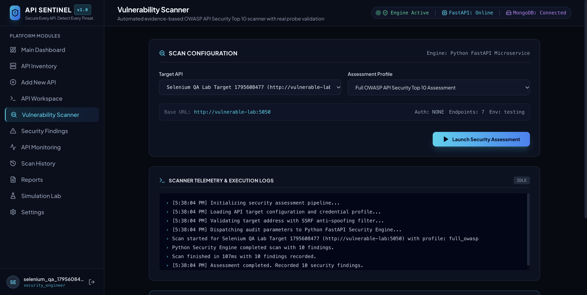
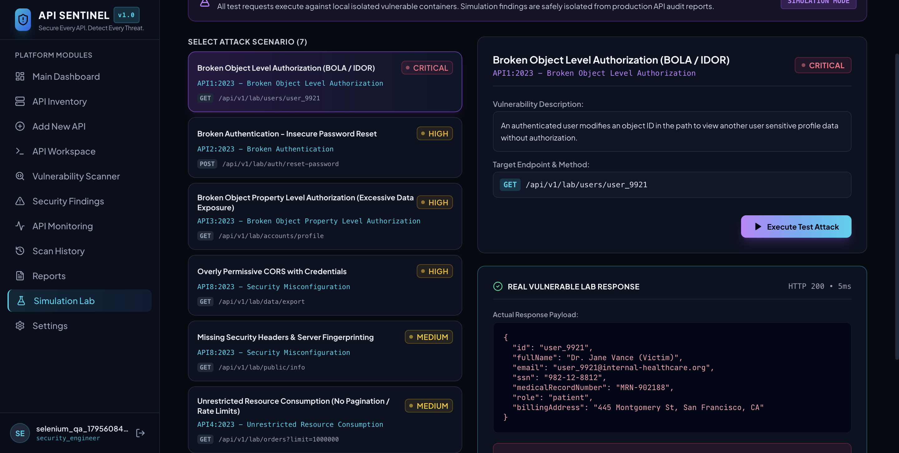

| Module | Test Name | Status | Duration | Details / Failure Screenshots |
|---|---|---|---|---|
| tests.test_application | test_application_availability_and_login_screen | PASS | 4.053s | Completed cleanly |
| tests.test_authentication | test_login_invalid_credentials_displays_error | PASS | 0.942s | Completed cleanly |
| tests.test_authentication | test_login_valid_credentials_navigates_to_dashboard | PASS | 0.858s | Completed cleanly |
| tests.test_dashboard | test_dashboard_cards_statistics_and_sidebar_navigation | PASS | 0.684s | Completed cleanly |
| tests.test_api_inventory | test_register_new_api_and_verify_in_inventory | PASS | 1.43s | Completed cleanly |
| tests.test_api_inventory | test_api_inventory_displays_registered_records | PASS | 0.556s | Completed cleanly |
| tests.test_api_inventory | test_api_inventory_search_and_filter_availability | NOT IMPLEMENTED | 0.552s | NOT IMPLEMENTED: ApiInventory.tsx does not render search or filter inputs (filtering is implemented on SecurityFindings page). |
| tests.test_api_workspace | test_api_workspace_get_jsonplaceholder_real_response | PASS | 1.774s | Completed cleanly |
| tests.test_api_workspace | test_api_workspace_post_jsonplaceholder_real_response | PASS | 1.371s | Completed cleanly |
| tests.test_vulnerability_scanner | test_vulnerability_scanner_on_local_simulation_target | PASS | 1.978s | Completed cleanly |
| tests.test_security_findings | test_security_findings_filtering_empty_state_and_modal | PASS | 2.839s | Completed cleanly |
| tests.test_monitoring | test_api_monitoring_health_and_manual_ping | PASS | 1.173s | Completed cleanly |
| tests.test_simulation_lab | test_simulation_lab_bola_execution_evidence_and_screenshot | PASS | 1.436s | Completed cleanly |
| tests.test_simulation_lab | test_simulation_lab_secure_control_comparison | NOT IMPLEMENTED | 0.553s | NOT IMPLEMENTED: SimulationLab.tsx displays vulnerable response, evidence, and Remediation Fix text, without an interactive secure-endpoint execution comparison toggle. |
| tests.test_reports | test_reports_generate_and_download_pdf | PASS | 1.73s | Completed cleanly |
| tests.test_logout | test_logout_redirects_and_blocks_protected_routes | PASS | 0.949s | Completed cleanly |

